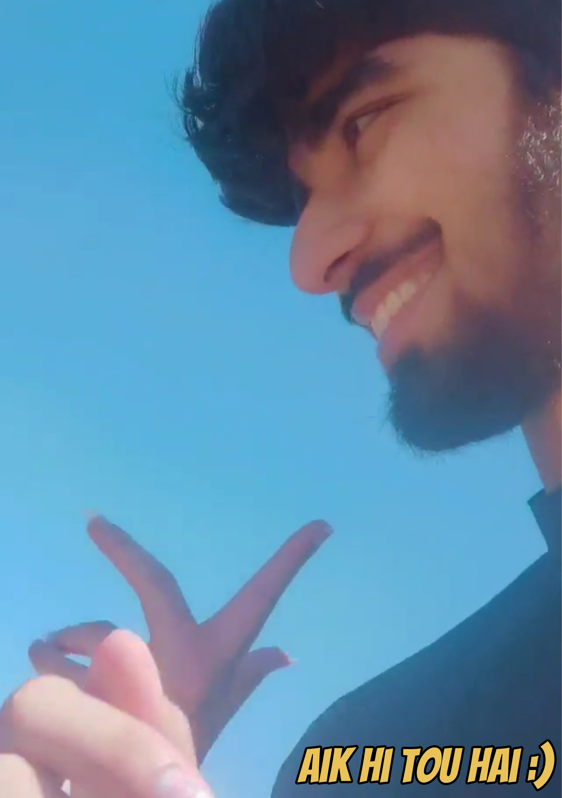
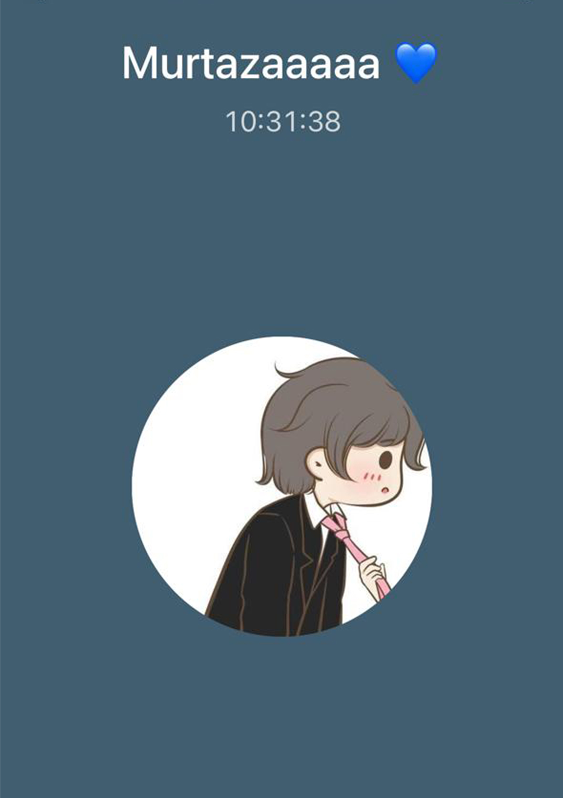

The Wish:
So this is the moment you've waited over a year for. I'm sure when you got the wish last year, you must have thought "Surely this is as good as it gets. This Man came back after 2 years and wrote me the best wish he's written me so far! It can't possibly get any better than this!"
Well, my dear Bubbu, IT HAS OFFICIALLY GOTTEN BETTER THAN EVER. THIS YEAR YOU GET AN INTERACTABLE WISH ON YOUR OWN PRIVATE LITTLE WEBSITE! Ab mazeed lambi kiye baghair let me start my wish
Here's a Beautiful memory

What is a wish?
"The desire or hope for something to happen."
So my dear, to be able to live with you for the rest my life with you, is my strongest desire. I wish for loads of things but I want nothing more desperately than to be able to call you my wife. To have mini Hibus and Murtazas roaming around. I want to wake up every day next to your beautiful face. I want to be greeted by your endearing smile when I wake up. I want your round ocean-like eyes to rest in mine as soon as we wake up. Before I met you, I used to think ocean eyes mean blue eyes but after I looked in your eyes for the first time, I knew in that moment that ocean eyes are the eyes in which it's easy to drown. They pull you to the deepest depth of their soul and make you feel like you're drowning in love. You have the most beautiful eyes I have ever seen and I am privelleged to call you mine.
Here's a Beautiful memory

Dear Khushi,
I wish you all the happiness that this life is able to offer. I wish you are happy at every turn in life. Whether that be in Karachi or Lahore. Whether you're studying or working. Whether you're in Pakistan or in the United Kingdom. I wish tears stop existing in your body as a result of too much happiness. I hope you smile with all 32 of your teeth every time you wake up because you get to live another day as the girl that's my soulmate, the one that everyone copies, the person who everyone needs when they're in trouble, the beauty of this world and the one beyond, the one who I can not stop staring at, the person that has never failed to make me smile in my lowest of times. You're truly a blessing to us all and even that is underselling it. You always have a hard time understanding why everyone praises you and showers you with love so once again, I'm going to tell you why you're the apple of my eye (yes that is a reference).
Remember when I sank into depression? The time when just existing caused me pain. When being awake was agonizing and the one way for me to survive was to escape away from reality and into games where I would drown hours until my body stopped working and I would be unable to have bad thoughts. And the cycle would start again. After 14 hours of sleep followed another 28 hours of agonizing lack of sleep.
That also happens to be the time when I told you not to call me. Not to expect me to reply. Basically act like I don't exist. Looking back, I'm not happy with how all that took place but that's not the point of this callback. No, the beauty that I'm trying to show you is that even though I cut myself off from the whole world, guess who would still sneak past my defenses to make sure I was still sane? Guess who always knew how I was doing. What my latest thoughts were. No, nobody from my family. My friends? Wrong again. It was you! You were always there for me. Even when you weren't. When I pushed you away, I always felt safe knowing that you would always be right by my side. Even if a million miles seperate us physically, you will always be closer to me than anyone will be able to. You're always going to be in my heart and in my mind. We're soulmates, which means our souls are one. We come in a pair, and boy am I lucky to have found my soulmate. I know it's stupid thinking everyone has one person that is made for them so here's a different way to look at it. There's billions of people on the planet right now right? Thousands are born every minute. Out of so many humans that have existed, currently exist and will exist, how can one person be another's soulmate? Isn't it impossible? Can't there always be someone that is a better match? Well yes and no! Yes it's very unlikely, but look at it in terms of maths. Even if there are Eight Hundred Trillion human beings, there is always going to be one that is the most compatible with another right? That's what you are baby. You're my one in Eight Hundred Trillion. You're my miracle. Your existence was supposed to be impossible but it makes sense when you think about it no? God has the power to overcome those odds. That's why he sent you to me and named you my "Gift". Because you're God's gift to me!
Baby, you're the motivation for me to get up every day and give it my 100%. When I don't feel like working, I think about the things that I'll be able to buy for you and for our family and that gets me working twice as hard! You bring energy into my body. And when I'm tired, broken down and still can't sleep, I come to you and you make me feel at peace. Like I'm home. I feel as though I'm safe in our bed next to you. I cuddle that pillow as hard as I can and man I just dose off. There's something so soothing about sleeping with you by my side that it just knocks me out. I wake up fully recharged and ready for a big day! That's all because of you. The days when you're not here, I feel very sad and upset. I miss you alot. When I'm alone, I listen to songs and a random melody can bring me to tears when you're not there.
I seek your attention 24/7. I annoy you but I also cheer you. I bite you but I also kiss you. I get mad but I also adore you. I love when you fight me over cute things like why didn't you text me when you went out. I know I start giving logical answers but inside I feel so cared for and looked after that I'm jumping from joy inside. I love everything about you! Your scent, your looks, your hugs, your kisses, your jokes, your laugh, your anger, your sadness, your achievements, your pride, your talent, your beauty, your sexual appeal, your body, your mind and your soul!
What I think about you
I used to think you're like a coconut. A tough exterior and a soft interior. But as I've grown older, seen tough times, broken down, dealt with the world on a scale I’ve never had to before, I’ve come to realize, strength does not lie in avoiding tears. I had it all backwards. I know you always tried being alone when you cried and I always found that strange but you told me it’s so you don’t feel weak. However, your actions have shown me that it takes much more to be strong. Crying doesn't make you weak, being numb is being weak. We all fear tears. I think letting them flow takes courage. The ability to be vulnerable, that's strength. The fact that you don't only not crack under the burden of your own problems but also being able to take other people's burdens. Feeling for others. Caring for others. Smiling despite the pain. Helping others while you’re under intense pressure just because you care for them. That's strength to me. You are the strongest human being I know Hiba Murtaza Babar Fatmi Koala Dinner. You're the best in the world. Literally. I love you so much. I want to be clear that I am calling you strong for sharing your life with me. For talking to me when you're angry as fuck. For still forgiving people despite how much they/I hurt you. You have clearly surpassed me in every way. My temperament, my ability to understand, my positivity, my faith, my ability to not lose myself while under pressure. I have seen these things get reduced in me last year and suddenly it's all showing up in you. You're so calm now. You let so many things go without making a big deal out of them. You tolerate so many things. You don't lash out. You don't ever cease to amaze me. I am so proud of you and all that you've accomplished. I have been happy with how I've changed some of my biggest flaws because of the feedback I got from you. You got over your anger and told me exactly what I did and was doing wrong and that’s allowed me to fix so many of my bad habits. However, I'm much prouder of you than I am of myself. You've grown so much that I am speechless in how to comment. All I know is, I'm extremely proud of you!
Another Special Gift
If Appi was here, she would say so many nice things. I know I never got the chance to talk to her but I’ve heard so many stories and seen her in some dreams. I feel like now I should be able to guess some of the things she’d say if she was here. So here’s something special for you Bubba. Whenever you're ready, please click the button below